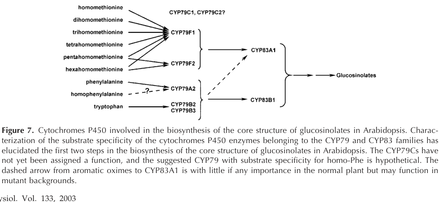

CYP83A1 (REF2; (methylsulfanyl)alkanaldoxime N-monooxygenase) is an endoplasmic reticulum-anchored cytochrome P450 monooxygenase that catalyzes the second step of core structure formation in methionine-derived (aliphatic) glucosinolate biosynthesis. It oxidizes the omega-(methylthio)alkanaldoximes produced by CYP79F1/CYP79F2 to a reactive aci-nitro/nitrile-oxide intermediate that is captured by glutathione, yielding S-alkylthiohydroximate glutathione conjugates (EC 1.14.14.43), which are subsequently processed by GGP1, the C-S lyase SUR1, UGT74 S-glucosyltransferases and sulfotransferases. CYP83A1 efficiently metabolizes aliphatic oximes of both short and long chain length, and has lower-affinity activity on aromatic (phenylalanine-, tyrosine- and tryptophan-derived) aldoximes; its paralog CYP83B1 is the physiological enzyme for indole-3-acetaldoxime, and the two are non-redundant under normal conditions. ref2/cyp83a1 mutants have reduced levels of all aliphatic glucosinolates and increased indole glucosinolates. The reduced sinapate esters and syringyl lignin of ref2 mutants are attributed to inhibition of phenylpropanoid O-methyltransferases by accumulating aliphatic aldoximes, an indirect metabolic consequence rather than a direct role in phenylpropanoid metabolism.
Definition: Catalysis of the reaction: an (E)-omega-(methylsulfanyl)-alkanal oxime + glutathione + reduced [NADPH--hemoprotein reductase] + O2 = an S-[(1E)-1-(hydroxyimino)-omega-(methylsulfanyl)alkyl]-L-glutathione + oxidized [NADPH--hemoprotein reductase] + 2 H2O + H+. The cytochrome P450 oxidizes the aldoxime to a reactive aci-nitro/nitrile-oxide species that is conjugated to glutathione; a step of aliphatic glucosinolate biosynthesis.
Justification: CYP83A1 has a directly demonstrated, well-defined reaction (EC 1.14.14.43; RHEA:51992) with no corresponding GO term. The only existing IDA term (GO:0016709) is both generic and placed on the NAD(P)H-donor branch, whereas the enzyme uses the flavoprotein NADPH-cytochrome P450 reductase, as for the sibling CYP79F activity GO:0120526, which GO places under GO:0016712. A specific term would give the aliphatic glucosinolate core pathway a complete set of reaction-level MF terms.
Supporting Evidence:
| GO Term | Evidence | Action | Reason |
|---|---|---|---|
|
GO:0004497
monooxygenase activity
|
IEA
GO_REF:0000002 |
KEEP AS NON CORE |
Summary: Generic cytochrome P450 InterPro2GO mapping. Correct (CYP83A1 is an NADPH- and O2-dependent P450 monooxygenase) but uninformative relative to its specific aliphatic aldoxime-oxidizing activity, for which GO has no term.
Reason: True general parent of the core activity; retained as non-core.
Supporting Evidence:
PMID:12970475
we show that aliphatic oximes derived from chain-elongated homologs of methionine are efficiently metabolized by CYP83A1, whereas CYP83B1 metabolizes these substrates with very low efficiency.
|
|
GO:0005506
iron ion binding
|
IEA
GO_REF:0000002 |
KEEP AS NON CORE |
Summary: Generic P450 mapping reflecting the heme iron. Chemically correct but a cofactor property, not the biological function.
Reason: Iron is bound within the heme prosthetic group; cofactor binding is non-core.
Supporting Evidence:
file:ARATH/CYP83A1/CYP83A1-uniprot.txt
Name=heme; Xref=ChEBI:CHEBI:30413;
|
|
GO:0005789
endoplasmic reticulum membrane
|
IEA
GO_REF:0000044 |
ACCEPT |
Summary: UniProt subcellular-location mapping (ER membrane, single-pass; by similarity). CYP83A1 is an N-terminally anchored microsomal P450 whose activity was characterized in microsomes co-expressing NADPH-cytochrome P450 reductase.
Reason: Consistent with the conserved microsomal P450 architecture and with the requirement for the ER-resident reductase partner; the functionally relevant location.
Supporting Evidence:
PMID:12970475
Microsomes of yeast ( Saccharomyces cerevisiae ) cells expressing recombinant CYP83A1 and CYP83B1 in the yeast strain WAT11 co-expressing the Arabidopsis NADPH:cytochrome P450 reductase ATR1
|
|
GO:0005829
cytosol
|
HDA
PMID:28887381 Global Analysis of Membrane-associated Protein Oligomerizati... |
MARK AS OVER ANNOTATED |
Summary: High-throughput membrane-protein correlation profiling assigned CYP83A1 to a cytosolic (soluble) pool. The study reports that many proteins partition between cytosolic and membrane-associated fractions, but CYP83A1 is a membrane-anchored P450 whose activity requires the ER-resident P450 reductase.
Reason: A cytosolic pool is not functionally plausible for an ER-anchored P450 that depends on membrane-bound reductase; the call most likely reflects fractionation behaviour. Kept as over-annotation rather than removed because it is a genuine experimental observation.
Supporting Evidence:
PMID:28887381
were clearly partitioned between cytosolic and membrane-associated pools
|
|
GO:0009625
response to insect
|
IEP
PMID:23144921 Water stress and aphid feeding differentially influence meta... |
KEEP AS NON CORE |
Summary: CYP83A1 transcript levels decreased after aphid infestation. This is an expression response of a biosynthetic gene.
Reason: Valid expression-pattern observation; aliphatic glucosinolates are anti-herbivore compounds, but CYP83A1 does not execute a response process itself.
Supporting Evidence:
PMID:23144921
transcript levels of biosynthetic genes MAM1, CYP79F1, CYP83A1, and UGT74C1 decreased after infestation with either aphid species
|
|
GO:0016491
oxidoreductase activity
|
IBA
GO_REF:0000033 |
KEEP AS NON CORE |
Summary: Very general PAINT annotation for a CYP71-clan node (CYP83A1 and CYP83B1 among the donors, as expected). Correct but carries no information beyond "enzyme".
Reason: Correct high-level parent of the core activity; non-core.
Supporting Evidence:
PMID:11553739
Instead, CYP83A1 catalyzes the initial conversion of aldoximes to thiohydroximates in the synthesis of glucosinolates not derived from tryptophan.
|
|
GO:0016705
oxidoreductase activity, acting on paired donors, with incorporation or reduction of molecular oxygen
|
IEA
GO_REF:0000002 |
KEEP AS NON CORE |
Summary: Generic P450 mapping; correct but uninformative ancestor of the core activity.
Reason: General parent term; non-core.
Supporting Evidence:
PMID:12970475
we show that aliphatic oximes derived from chain-elongated homologs of methionine are efficiently metabolized by CYP83A1
|
|
GO:0016709
oxidoreductase activity, acting on paired donors, with incorporation or reduction of molecular oxygen, NAD(P)H as one donor, and incorporation of one atom of oxygen
|
IDA
PMID:12970475 CYP83A1 and CYP83B1, two nonredundant cytochrome P450 enzyme... |
MODIFY |
Summary: Recombinant CYP83A1 in yeast microsomes (with Arabidopsis P450 reductase ATR1) metabolizes aliphatic methylthioalkanaldoximes (Km about 20-150 uM) in an NADPH-dependent reaction that, with glutathione as nucleophile, yields the S-(methylthioalkylhydroximoyl)-glutathione conjugate. This is EC 1.14.14.43 ((methylsulfanyl)alkanaldoxime N-monooxygenase). GO has no term for this reaction; moreover, electrons are supplied by the flavoprotein P450 reductase, so the appropriate donor branch is GO:0016712 rather than GO:0016709.
Reason: The essence (P450 monooxygenase activity shown directly in vitro) is correct, but a specific reaction is demonstrated for which a new GO term is proposed (see proposed_new_terms); the nearest existing correctly placed parent is GO:0016712.
Proposed replacements:
(methylsulfanyl)alkanaldoxime N-monooxygenase activity
oxidoreductase activity, acting on paired donors, with incorporation or reduction of molecular oxygen, reduced flavin or flavoprotein as one donor, and incorporation of one atom of oxygen
Supporting Evidence:
PMID:12970475
When CYP83A1 was incubated with 4-methylthiobutanaldoxime in the presence of [ 35 S]-glutathione as the nucleophile, an NADPH-dependent product was formed
PMID:12970475
The product is most likely the S -alkylthiohydroximate designated S -(4-methylthiobutylhydroximoyl)-glutathione, analogous to the conjugates produced when using Cys as sulfur donor.
PMID:12970475
The K m values of recombinant CYP83A1 for aliphatic oximes were estimated to be in the range of 20 to 150
|
|
GO:0019761
glucosinolate biosynthetic process
|
IDA
PMID:11553739 The involvement of two p450 enzymes, CYP83B1 and CYP83A1, in... |
ACCEPT |
Summary: Recombinant CYP83A1 converts aldoximes to thiohydroximate adducts in the presence of NADPH and a thiol donor; kinetic comparison with CYP83B1 shows CYP83A1 acts in glucosinolate synthesis from non-tryptophan aldoximes. CYP83A1 performs a catalytic step of the pathway.
Reason: Direct biochemical evidence that the enzyme catalyzes a step of glucosinolate biosynthesis, corroborated genetically by the ref2 aliphatic glucosinolate deficiency.
Supporting Evidence:
PMID:11553739
Instead, CYP83A1 catalyzes the initial conversion of aldoximes to thiohydroximates in the synthesis of glucosinolates not derived from tryptophan.
PMID:12509530
These results show that CYP83A1 is involved in the biosynthesis of both short-chain and long-chain aliphatic glucosinolates
|
|
GO:0020037
heme binding
|
IEA
GO_REF:0000002 |
KEEP AS NON CORE |
Summary: Generic P450 mapping; heme is the catalytic cofactor. Correct but non-core.
Reason: Cofactor binding is non-core relative to the catalytic activity.
Supporting Evidence:
file:ARATH/CYP83A1/CYP83A1-uniprot.txt
Name=heme; Xref=ChEBI:CHEBI:30413;
|
Q: Does CYP83A1 release an aci-nitro compound or a nitrile oxide, and is glutathione conjugation spontaneous in vivo or catalyzed by specific GSTs (e.g. GSTF family members)?
Q: Which aliphatic aldoxime(s) accumulating in ref2 inhibit caffeic acid O-methyltransferase, and is this cross-talk relevant to lignin engineering in glucosinolate-containing oilseeds?
Experiment: Reconstitute CYP83A1 with and without candidate GSTFs in N. benthamiana transient expression of the aliphatic core pathway and quantify desulfoglucosinolate output and by-products.
Hypothesis: GST-catalyzed glutathione conjugation is required for efficient channelling of the CYP83A1 product in planta.
Type: pathway reconstitution
Experiment: Test whether blocking aldoxime formation (cyp79f1 cyp79f2) suppresses the sinapoylmalate and syringyl lignin defects of ref2.
Hypothesis: Accumulating aliphatic aldoximes, not glucosinolate deficiency, cause the ref2 phenylpropanoid phenotype.
Type: genetic epistasis
The research report should be a detailed narrative explaining the function, biological processes, and localization of the gene product. Citations should be given for all claims.
You should prioritize authoritative reviews and primary scientific literature when conducting research. You can supplement
this with annotations you find in gene/protein databases, but these can be outdated or inaccurate.
We are specifically interested in the primary function of the gene - for enzymes, what reaction is catalyzed, and what is the substrate specificity? For transporters, what is the substrate? For structural proteins or adapters, what is the broader structural role? For signaling molecules, what is the role in the pathway.
We are interested in where in or outside the cell the gene product carries out its function.
We are also interested in the signaling or biochemical pathways in which the gene functions. We are less interested in broad pleiotropic effects, except where these elucidate the precise role.
Include evidence where possible. We are interested in both experimental evidence as well as inference from structure, evolution, or bioinformatic analysis. Precise studies should be prioritized over high-throughput, where available.
CYP83A1, also known as REF2 (REDUCED EPIDERMAL FLUORESCENCE 2) or simply CYP83, is a cytochrome P450 monooxygenase encoded by the gene At4g13770 in Arabidopsis thaliana (kim2015indoleglucosinolatebiosynthesis pages 1-2, kim2015indoleglucosinolatebiosynthesis pages 3-6). The enzyme belongs to the cytochrome P450 family and is classified as EC 1.14.14.43 according to the Enzyme Commission nomenclature (naur2003cyp83a1andcyp83b1 pages 3-4, naur2003cyp83a1andcyp83b1 pages 7-9).
CYP83A1 is an NADPH-dependent cytochrome P450 monooxygenase that catalyzes the oxidative activation of amino acid-derived aldoximes during glucosinolate biosynthesis (naur2003cyp83a1andcyp83b1 pages 3-4, naur2003cyp83a1andcyp83b1 pages 1-2, mikkelsen2002biosynthesisandmetabolic pages 6-9). The enzyme oxidizes aldoxime substrates to highly reactive intermediates, generally modeled as aci-nitro compounds and/or nitrile oxides, which are subsequently captured by sulfur nucleophiles such as glutathione or cysteine (mikkelsen2002biosynthesisandmetabolic pages 6-9, halkier2006biologyandbiochemistry pages 6-7).
The overall reaction can be summarized as:
Aliphatic aldoxime + O₂ + NADPH + H⁺ + glutathione → S-alkylthiohydroximate conjugate + NADP⁺ + H₂O
The immediate product is an S-alkylthiohydroximate that serves as an intermediate in the glucosinolate biosynthetic pathway (naur2003cyp83a1andcyp83b1 pages 3-4, naur2003cyp83a1andcyp83b1 pages 1-2). In biochemical assays using cysteine as the trapping agent, CYP83A1 converts 4-methylthiobutanaldoxime into S-(4-methylthiobutylhydroximoyl)-L-cysteine, which can spontaneously cyclize to form 2-(3-methylthiopropyl)-thiazoline-4-carboxylic acid (naur2003cyp83a1andcyp83b1 pages 3-4, naur2003cyp83a1andcyp83b1 pages 1-2).
CYP83A1 exhibits broad but strongly biased substrate specificity (naur2003cyp83a1andcyp83b1 pages 2-3, naur2003cyp83a1andcyp83b1 pages 1-2, naur2003cyp83a1andcyp83b1 pages 3-4). The enzyme preferentially metabolizes aliphatic aldoximes derived from chain-elongated methionine homologs, including:
- 4-methylthiobutanaldoxime
- 5-methylthiopentanaldoxime
- 6-methylthiohexanaldoxime
- 7-methylthioheptanaldoxime
While CYP83A1 can also metabolize aromatic aldoximes—including indole-3-acetaldoxime, phenylacetaldoxime, and p-hydroxyphenylacetaldoxime—it does so with substantially lower efficiency (naur2003cyp83a1andcyp83b1 pages 2-3, naur2003cyp83a1andcyp83b1 pages 1-2). Kinetic studies reveal that CYP83A1 has approximately 50-fold lower affinity for indole-3-acetaldoxime compared to its paralog CYP83B1, which is specialized for aromatic and indolic substrates (naur2003cyp83a1andcyp83b1 pages 2-3, naur2003cyp83a1andcyp83b1 pages 3-4).
CYP83A1 functions as a critical enzyme in the core aliphatic glucosinolate biosynthesis pathway, positioned immediately downstream of CYP79 family enzymes (wang2020characterizationofarabidopsis pages 1-2, naur2003cyp83a1andcyp83b1 pages 6-7, naur2003cyp83a1andcyp83b1 media 2446b7c6). The pathway proceeds as follows:
This pathway organization is illustrated in the glucosinolate biosynthesis pathway diagram (naur2003cyp83a1andcyp83b1 media 2446b7c6), which shows CYP83A1 functioning in parallel with CYP83B1 to process aldoximes from different amino acid precursors.
CYP83A1 occupies a metabolically strategic position at the branch point between glucosinolate biosynthesis and auxin (indole-3-acetic acid, IAA) production (naur2003cyp83a1andcyp83b1 pages 6-7, malka2017possibleinteractionsbetween pages 3-5, kim2015indoleglucosinolatebiosynthesis pages 2-3). Indole-3-acetaldoxime (IAOx) serves as a common intermediate that can be channeled either toward indole glucosinolate biosynthesis (primarily via CYP83B1) or toward IAA production.
When CYP83A1 or CYP83B1 activity is reduced, more IAOx becomes available for conversion to IAA, leading to elevated auxin levels (naur2003cyp83a1andcyp83b1 pages 6-7, malka2017possibleinteractionsbetween pages 3-5). However, unlike cyp83b1/sur2 mutants which display pronounced high-auxin phenotypes, ref2/cyp83a1 mutants generally lack strong auxin-related morphological changes, consistent with CYP83A1's primary role in aliphatic rather than indolic aldoxime metabolism (shin2023alteredmethioninemetabolism pages 4-6).
One of the most striking aspects of CYP83A1 function is its impact on phenylpropanoid metabolism (kim2015indoleglucosinolatebiosynthesis pages 1-2, kim2015indoleglucosinolatebiosynthesis pages 3-6, shin2023alteredmethioninemetabolism pages 4-6). The ref2 mutant phenotype was originally identified based on reduced epidermal fluorescence, reflecting approximately 70% decreased accumulation of sinapoylmalate, a UV-protective phenylpropanoid compound that fluoresces blue under UV light (kim2015indoleglucosinolatebiosynthesis pages 1-2, kim2015indoleglucosinolatebiosynthesis pages 3-6).
Recent studies have revealed that this phenylpropanoid deficiency results from accumulated aldoximes—both aliphatic aldoximes (AAOx) and indole-3-acetaldoxime (IAOx)—which repress phenylpropanoid biosynthesis, likely through accelerated degradation of phenylalanine ammonia-lyase (PAL), the entry-point enzyme of the phenylpropanoid pathway (shin2023alteredmethioninemetabolism pages 4-6). Genetic experiments removing AAOx biosynthesis fully restore phenylpropanoid production in ref2 mutants, while removing only IAOx provides partial restoration (shin2023alteredmethioninemetabolism pages 4-6).
Additionally, ref2 mutants show markedly reduced syringyl lignin content, with stems containing only 25-50% of wild-type syringyl-lignin deposition (kim2015indoleglucosinolatebiosynthesis pages 10-12, kim2015indoleglucosinolatebiosynthesis pages 2-3). This lignin phenotype distinguishes CYP83A1 from CYP83B1, as ref5/cyp83b1 mutants do not show significant changes in lignin composition (kim2015indoleglucosinolatebiosynthesis pages 10-12).
CYP83A1 is a microsomal cytochrome P450 enzyme localized to the endoplasmic reticulum (ER) membrane (naur2003cyp83a1andcyp83b1 pages 7-9, hansen2001cyp83b1isthe pages 3-4). This localization is consistent with the general properties of plant cytochrome P450 enzymes, which are typically ER-associated membrane proteins. The enzyme requires an NADPH:cytochrome P450 reductase electron-transfer partner for catalytic activity, and recombinant CYP83A1 has been successfully expressed and assayed in yeast microsomes using the Arabidopsis P450 reductase ATR1 (naur2003cyp83a1andcyp83b1 pages 7-9).
CYP83A1 is expressed in both seedlings and mature rosette leaves (naur2003cyp83a1andcyp83b1 pages 3-4, naur2003cyp83a1andcyp83b1 pages 6-7). Semiquantitative RT-PCR analysis detected CYP83A1 transcripts in 10-day-old seedlings and in rosette leaves from 5-week-old plants, with relatively consistent expression levels across these developmental stages under normal growth conditions (naur2003cyp83a1andcyp83b1 pages 3-4).
CYP83A1 expression can be modulated by several factors:
Cold stress: Prolonged cold stress induces CYP83A1 expression approximately 2- to 4-fold in Arabidopsis (pandian2020roleofcytochrome pages 5-7)
Metabolic feedback: In the rnt1-1 mutant background, which exhibits increased indole-3-acetaldoxime production, CYP83A1 expression is modestly elevated (approximately 1.5-fold) in mature rosette leaves, suggesting a compensatory response to metabolic imbalance (naur2003cyp83a1andcyp83b1 pages 3-4, naur2003cyp83a1andcyp83b1 pages 6-7)
Auxin independence: Unlike CYP83B1, whose promoter contains auxin-responsive elements and is induced by IAA, the CYP83A1 promoter lacks such elements and is not regulated by auxin through the same mechanism (mikkelsen2002biosynthesisandmetabolic pages 9-11)
Loss of CYP83A1 function in ref2 or cyp83a1 mutants results in markedly reduced aliphatic glucosinolate levels, confirming the enzyme's dominant role in the aliphatic glucosinolate biosynthesis branch (xia2021genomewideidentificationand pages 25-27, xia2021genomewideidentificationand pages 27-28). Interestingly, these mutants often show compensatory increases in indole glucosinolate accumulation, reflecting metabolic flux redistribution (xia2021genomewideidentificationand pages 25-27, xia2021genomewideidentificationand pages 27-28).
A notable finding from recent research is that the cyp83a1-3 mutant allele exhibits enhanced resistance to the powdery mildew fungus Golovinomyces cichoracearum (liu2016mutationofthe pages 1-2). This enhanced resistance is associated with elevated expression of camalexin biosynthesis genes and higher camalexin accumulation. Genetic analysis demonstrated that this resistance phenotype requires NPR1, EDS1, and PAD4, but not SID2 or EDS5, and that reducing camalexin production through pad3 or wrky33 mutations compromises the resistance (liu2016mutationofthe pages 1-2). This phenotype represents a metabolic redistribution effect rather than a direct defense function of CYP83A1.
The ref2 ref5 double mutant, combining disruptions in both CYP83A1 and CYP83B1, displays a severe phenotype including slow growth, failure to bolt and flower, and approximately 96% reduction in sinapoylmalate levels (kim2015indoleglucosinolatebiosynthesis pages 3-6). This synthetic phenotype reveals partial functional redundancy between the two CYP83 paralogs and demonstrates that glucosinolate-pathway aldoxime metabolism is essential for normal plant development.
CYP83A1 contributes to plant chemical defense by supplying aliphatic glucosinolates, which are sulfur- and nitrogen-containing secondary metabolites stored in plant tissues (mikkelsen2003modulationofcyp79 pages 1-2, pandian2020roleofcytochrome pages 7-8). When tissues are damaged by herbivores or pathogens, myrosinase enzymes hydrolyze glucosinolates into biologically active products including isothiocyanates, nitriles, and thiocyanates (mikkelsen2003modulationofcyp79 pages 1-2). These breakdown products can:
The enzyme thus plays an indirect but important role in constitutive chemical defense by ensuring adequate production of aliphatic glucosinolate precursors (mikkelsen2003modulationofcyp79 pages 1-2, pandian2020roleofcytochrome pages 7-8, mikkelsen2002biosynthesisandmetabolic pages 6-9).
Recent research has expanded understanding of CYP83A1 in several directions:
Metabolic engineering: CYP83A1 has been used in metabolic engineering approaches to modify glucosinolate profiles in crop brassicas. Studies in Chinese cabbage and broccoli have demonstrated that manipulating CYP83A1 expression can alter glucosinolate content and composition, with implications for nutritional quality and pest resistance (wang2020characterizationofarabidopsis pages 1-2)
Heterologous expression: Systematic engineering studies have identified optimal strategies for expressing plant CYP83 enzymes in Escherichia coli for biotechnological applications. Transmembrane domain truncation was identified as the most effective modification for achieving high in vivo activity of CYP83A1 in bacterial systems, increasing product titers by 2- to 170-fold (wang2020characterizationofarabidopsis pages 1-2)
Natural variation: Genome-wide association studies in local Arabidopsis populations have identified natural polymorphisms in CYP83A1 that affect glucosinolate diversity, providing the first evidence for effects of natural CYP83A1 variants on metabolite phenotypes (wang2020characterizationofarabidopsis pages 1-2)
| Characteristic | CYP83A1 annotation and evidence |
|---|---|
| Identity | CYP83A1, also known as CYP83 and REF2 (REDUCED EPIDERMAL FLUORESCENCE 2), is the Arabidopsis thaliana protein encoded at At4g13770. Primary biochemical and mutant studies identify REF2 as CYP83A1 (kim2015indoleglucosinolatebiosynthesis pages 1-2, kim2015indoleglucosinolatebiosynthesis pages 3-6). |
| Enzyme class | Microsomal, heme-containing cytochrome P450 monooxygenase in the CYP83 family; activity is NADPH dependent and uses an NADPH–cytochrome P450 reductase electron-transfer partner (naur2003cyp83a1andcyp83b1 pages 3-4, naur2003cyp83a1andcyp83b1 pages 7-9). |
| Primary catalytic function | Oxidatively activates amino-acid-derived aldoximes during glucosinolate core-structure biosynthesis. The reactive product is generally modeled as an aci-nitro compound and/or nitrile oxide, which is captured by a sulfur nucleophile (mikkelsen2002biosynthesisandmetabolic pages 6-9, halkier2006biologyandbiochemistry pages 6-7). |
| Physiological reaction summary | Aliphatic aldoxime + O₂ + NADPH + H⁺ + glutathione → S-alkylthiohydroximate conjugate + NADP⁺ + H₂O. Sulfur conjugation follows CYP83A1-mediated oxidation; the unstable oxidized intermediate has not been isolated directly (naur2003cyp83a1andcyp83b1 pages 3-4, mikkelsen2002biosynthesisandmetabolic pages 6-9, halkier2006biologyandbiochemistry pages 6-7). |
| Preferred substrates | Strongly favors aliphatic aldoximes derived from chain-elongated methionine homologues, including 4-methylthiobutanaldoxime, 5-methylthiopentanaldoxime, 6-methylthiohexanaldoxime, and 7-methylthioheptanaldoxime (naur2003cyp83a1andcyp83b1 pages 2-3, naur2003cyp83a1andcyp83b1 pages 1-2). |
| Secondary substrates | Also accepts aromatic aldoximes—including indole-3-acetaldoxime, phenylacetaldoxime, and p-hydroxyphenylacetaldoxime—but CYP83B1 is substantially better adapted to aromatic/indolic substrates; affinity for indole-3-acetaldoxime differs by about 50-fold between the enzymes (naur2003cyp83a1andcyp83b1 pages 2-3, naur2003cyp83a1andcyp83b1 pages 3-4). |
| Immediate products | In vivo, the oxidized aldoxime is captured principally through glutathione-dependent sulfur incorporation to form an S-alkylthiohydroximate. In cysteine-trapping assays, 4-methylthiobutanaldoxime yields S-(4-methylthiobutylhydroximoyl)-L-cysteine, which can cyclize to 2-(3-methylthiopropyl)-thiazoline-4-carboxylic acid (naur2003cyp83a1andcyp83b1 pages 3-4, naur2003cyp83a1andcyp83b1 pages 1-2). |
| Biological pathway | Functions immediately downstream of CYP79 enzymes in the core aliphatic glucosinolate biosynthesis pathway, channeling methionine-derived aldoximes toward sulfur-containing glucosinolate intermediates (wang2020characterizationofarabidopsis pages 1-2, naur2003cyp83a1andcyp83b1 pages 6-7, naur2003cyp83a1andcyp83b1 media 2446b7c6). |
| Subcellular localization | Best supported as an endoplasmic-reticulum-associated microsomal enzyme. Recombinant activity was recovered in yeast microsomes with an Arabidopsis P450 reductase; the ER assignment is mechanistically strong but largely inferred rather than established by a dedicated CYP83A1 imaging experiment (naur2003cyp83a1andcyp83b1 pages 7-9). |
| Defense role | Supplies aliphatic glucosinolates whose myrosinase-dependent hydrolysis after tissue injury generates bioactive products such as isothiocyanates, nitriles, and thiocyanates. These products can inhibit microbes and deter generalist herbivores, although some specialists use glucosinolates as host cues (liu2016mutationofthe pages 1-2, mikkelsen2003modulationofcyp79 pages 1-2). |
| Loss-of-function glucosinolate phenotype | ref2/cyp83a1 mutants have markedly reduced aliphatic glucosinolates and can show compensatory increases in indole glucosinolates, confirming CYP83A1’s dominant in-planta role in the aliphatic branch (xia2021genomewideidentificationand pages 25-27, xia2021genomewideidentificationand pages 27-28, shin2023alteredmethioninemetabolism pages 4-6). |
| Reduced epidermal fluorescence | The ref2 phenotype reflects an approximately 70% decrease in sinapoylmalate, a UV-fluorescent phenylpropanoid accumulated in the leaf epidermis; consequently, mutant leaves show reduced blue fluorescence under UV illumination (kim2015indoleglucosinolatebiosynthesis pages 1-2, kim2015indoleglucosinolatebiosynthesis pages 3-6). |
| Lignin phenotype | CYP83A1 disruption changes phenylpropanoid allocation and markedly reduces syringyl lignin: ref2 stems contain only about 25–50% of wild-type syringyl-lignin deposition in reported analyses (kim2015indoleglucosinolatebiosynthesis pages 10-12, kim2015indoleglucosinolatebiosynthesis pages 2-3). |
| Auxin-pathway crosstalk | CYP83A1 can metabolize indole-3-acetaldoxime and thereby limit diversion of this shared intermediate toward indole-3-acetic acid. This effect is secondary to its main aliphatic role and weaker than that of CYP83B1; notably, ref2 generally lacks the strong high-auxin morphology typical of cyp83b1/sur2 (naur2003cyp83a1andcyp83b1 pages 6-7, kim2015indoleglucosinolatebiosynthesis pages 2-3, shin2023alteredmethioninemetabolism pages 4-6). |
| Phenylpropanoid crosstalk | Accumulated aliphatic and indolic aldoximes in ref2 repress phenylpropanoid production. Removing indole-3-acetaldoxime production only partially rescues the defect, whereas suppressing aliphatic-aldoxime production restores phenylpropanoid output and PAL activity more fully (kim2015indoleglucosinolatebiosynthesis pages 3-6, shin2023alteredmethioninemetabolism pages 4-6). |
| Pathogen-related phenotype | A cyp83a1-3 allele accumulates more camalexin and shows enhanced resistance to Golovinomyces cichoracearum; genetic suppression of camalexin synthesis compromises this resistance. This is a metabolic-redistribution phenotype, not evidence that CYP83A1 normally synthesizes camalexin (liu2016mutationofthe pages 1-2). |
| Functional interpretation | CYP83A1 is best annotated as the principal ER-associated aliphatic-aldoxime oxidase of glucosinolate core biosynthesis. Its broader developmental and defense phenotypes arise chiefly from altered allocation among glucosinolate, phenylpropanoid, auxin-related, and camalexin metabolism rather than from a direct signaling function (naur2003cyp83a1andcyp83b1 pages 6-7, shin2023alteredmethioninemetabolism pages 4-6, liu2016mutationofthe pages 1-2). |
Table: This table consolidates the experimentally supported identity, catalytic reaction, substrate preference, localization, pathway role, and mutant phenotypes of Arabidopsis CYP83A1/REF2. It distinguishes the enzyme’s primary aliphatic-glucosinolate function from secondary metabolic crosstalk.
CYP83A1/REF2 is a well-characterized cytochrome P450 monooxygenase that plays a central role in aliphatic glucosinolate biosynthesis in Arabidopsis thaliana. As an ER-localized enzyme, it catalyzes the NADPH-dependent oxidation of aliphatic aldoximes, preferentially metabolizing methionine-derived substrates to produce S-alkylthiohydroximate intermediates. Beyond its primary function in glucosinolate biosynthesis, CYP83A1 participates in complex metabolic crosstalk involving auxin homeostasis and phenylpropanoid metabolism. Loss-of-function mutations reveal pleiotropic effects including reduced glucosinolates, altered lignin composition, decreased phenylpropanoid accumulation, and paradoxically enhanced pathogen resistance through camalexin accumulation. The enzyme represents a key metabolic node integrating defense compound biosynthesis with broader aspects of plant development and stress responses.
References
(kim2015indoleglucosinolatebiosynthesis pages 1-2): Jeong Im Kim, Whitney L. Dolan, Nickolas A. Anderson, and Clint Chapple. Indole glucosinolate biosynthesis limits phenylpropanoid accumulation in arabidopsis thaliana. Plant Cell, 27:1529-1546, May 2015. URL: https://doi.org/10.1105/tpc.15.00127, doi:10.1105/tpc.15.00127. This article has 145 citations and is from a highest quality peer-reviewed journal.
(kim2015indoleglucosinolatebiosynthesis pages 3-6): Jeong Im Kim, Whitney L. Dolan, Nickolas A. Anderson, and Clint Chapple. Indole glucosinolate biosynthesis limits phenylpropanoid accumulation in arabidopsis thaliana. Plant Cell, 27:1529-1546, May 2015. URL: https://doi.org/10.1105/tpc.15.00127, doi:10.1105/tpc.15.00127. This article has 145 citations and is from a highest quality peer-reviewed journal.
(naur2003cyp83a1andcyp83b1 pages 3-4): Peter Naur, Bent Larsen Petersen, Michael Dalgaard Mikkelsen, Søren Bak, Hasse Rasmussen, Carl Erik Olsen, and Barbara Ann Halkier. Cyp83a1 and cyp83b1, two nonredundant cytochrome p450 enzymes metabolizing oximes in the biosynthesis of glucosinolates in arabidopsis1. Plant Physiology, 133:63-72, Sep 2003. URL: https://doi.org/10.1104/pp.102.019240, doi:10.1104/pp.102.019240. This article has 312 citations and is from a highest quality peer-reviewed journal.
(naur2003cyp83a1andcyp83b1 pages 7-9): Peter Naur, Bent Larsen Petersen, Michael Dalgaard Mikkelsen, Søren Bak, Hasse Rasmussen, Carl Erik Olsen, and Barbara Ann Halkier. Cyp83a1 and cyp83b1, two nonredundant cytochrome p450 enzymes metabolizing oximes in the biosynthesis of glucosinolates in arabidopsis1. Plant Physiology, 133:63-72, Sep 2003. URL: https://doi.org/10.1104/pp.102.019240, doi:10.1104/pp.102.019240. This article has 312 citations and is from a highest quality peer-reviewed journal.
(naur2003cyp83a1andcyp83b1 pages 1-2): Peter Naur, Bent Larsen Petersen, Michael Dalgaard Mikkelsen, Søren Bak, Hasse Rasmussen, Carl Erik Olsen, and Barbara Ann Halkier. Cyp83a1 and cyp83b1, two nonredundant cytochrome p450 enzymes metabolizing oximes in the biosynthesis of glucosinolates in arabidopsis1. Plant Physiology, 133:63-72, Sep 2003. URL: https://doi.org/10.1104/pp.102.019240, doi:10.1104/pp.102.019240. This article has 312 citations and is from a highest quality peer-reviewed journal.
(mikkelsen2002biosynthesisandmetabolic pages 6-9): M. D. Mikkelsen, B. L. Petersen, C. E. Olsen, and B. A. Halkier. Biosynthesis and metabolic engineering of glucosinolates. Amino Acids, 22:279-295, Apr 2002. URL: https://doi.org/10.1007/s007260200014, doi:10.1007/s007260200014. This article has 206 citations and is from a peer-reviewed journal.
(halkier2006biologyandbiochemistry pages 6-7): Barbara Ann Halkier and Jonathan Gershenzon. Biology and biochemistry of glucosinolates. Jun 2006. URL: https://doi.org/10.1146/annurev.arplant.57.032905.105228, doi:10.1146/annurev.arplant.57.032905.105228. This article has 2950 citations and is from a domain leading peer-reviewed journal.
(naur2003cyp83a1andcyp83b1 pages 2-3): Peter Naur, Bent Larsen Petersen, Michael Dalgaard Mikkelsen, Søren Bak, Hasse Rasmussen, Carl Erik Olsen, and Barbara Ann Halkier. Cyp83a1 and cyp83b1, two nonredundant cytochrome p450 enzymes metabolizing oximes in the biosynthesis of glucosinolates in arabidopsis1. Plant Physiology, 133:63-72, Sep 2003. URL: https://doi.org/10.1104/pp.102.019240, doi:10.1104/pp.102.019240. This article has 312 citations and is from a highest quality peer-reviewed journal.
(wang2020characterizationofarabidopsis pages 1-2): Cuiwei Wang, Mads Møller Dissing, Niels Agerbirk, Christoph Crocoll, and Barbara Ann Halkier. Characterization of arabidopsis cyp79c1 and cyp79c2 by glucosinolate pathway engineering in nicotiana benthamiana shows substrate specificity toward a range of aliphatic and aromatic amino acids. Frontiers in Plant Science, Feb 2020. URL: https://doi.org/10.3389/fpls.2020.00057, doi:10.3389/fpls.2020.00057. This article has 47 citations.
(naur2003cyp83a1andcyp83b1 pages 6-7): Peter Naur, Bent Larsen Petersen, Michael Dalgaard Mikkelsen, Søren Bak, Hasse Rasmussen, Carl Erik Olsen, and Barbara Ann Halkier. Cyp83a1 and cyp83b1, two nonredundant cytochrome p450 enzymes metabolizing oximes in the biosynthesis of glucosinolates in arabidopsis1. Plant Physiology, 133:63-72, Sep 2003. URL: https://doi.org/10.1104/pp.102.019240, doi:10.1104/pp.102.019240. This article has 312 citations and is from a highest quality peer-reviewed journal.
(naur2003cyp83a1andcyp83b1 media 2446b7c6): Peter Naur, Bent Larsen Petersen, Michael Dalgaard Mikkelsen, Søren Bak, Hasse Rasmussen, Carl Erik Olsen, and Barbara Ann Halkier. Cyp83a1 and cyp83b1, two nonredundant cytochrome p450 enzymes metabolizing oximes in the biosynthesis of glucosinolates in arabidopsis1. Plant Physiology, 133:63-72, Sep 2003. URL: https://doi.org/10.1104/pp.102.019240, doi:10.1104/pp.102.019240. This article has 312 citations and is from a highest quality peer-reviewed journal.
(malka2017possibleinteractionsbetween pages 3-5): Siva K. Malka and Youfa Cheng. Possible interactions between the biosynthetic pathways of indole glucosinolate and auxin. Frontiers in Plant Science, Dec 2017. URL: https://doi.org/10.3389/fpls.2017.02131, doi:10.3389/fpls.2017.02131. This article has 107 citations.
(kim2015indoleglucosinolatebiosynthesis pages 2-3): Jeong Im Kim, Whitney L. Dolan, Nickolas A. Anderson, and Clint Chapple. Indole glucosinolate biosynthesis limits phenylpropanoid accumulation in arabidopsis thaliana. Plant Cell, 27:1529-1546, May 2015. URL: https://doi.org/10.1105/tpc.15.00127, doi:10.1105/tpc.15.00127. This article has 145 citations and is from a highest quality peer-reviewed journal.
(shin2023alteredmethioninemetabolism pages 4-6): Doosan Shin, Veronica C. Perez, Gabriella K. Dickinson, Haohao Zhao, Ru Dai, Breanna Tomiczek, Keun Ho Cho, Ning Zhu, Jin Koh, Alexander Grenning, and Jeongim Kim. Altered methionine metabolism impacts phenylpropanoid production and plant development in arabidopsis thaliana. The Plant Journal, 116:187-200, Jul 2023. URL: https://doi.org/10.1111/tpj.16370, doi:10.1111/tpj.16370. This article has 22 citations.
(kim2015indoleglucosinolatebiosynthesis pages 10-12): Jeong Im Kim, Whitney L. Dolan, Nickolas A. Anderson, and Clint Chapple. Indole glucosinolate biosynthesis limits phenylpropanoid accumulation in arabidopsis thaliana. Plant Cell, 27:1529-1546, May 2015. URL: https://doi.org/10.1105/tpc.15.00127, doi:10.1105/tpc.15.00127. This article has 145 citations and is from a highest quality peer-reviewed journal.
(hansen2001cyp83b1isthe pages 3-4): Carsten Hørslev Hansen, Liangcheng Du, Peter Naur, Carl Erik Olsen, Kristian B. Axelsen, Alastair J. Hick, John A. Pickett, and Barbara Ann Halkier. Cyp83b1 is the oxime-metabolizing enzyme in the glucosinolate pathway in arabidopsis *. The Journal of Biological Chemistry, 276:24790-24796, Jul 2001. URL: https://doi.org/10.1074/jbc.m102637200, doi:10.1074/jbc.m102637200. This article has 203 citations.
(pandian2020roleofcytochrome pages 5-7): Balaji Aravindhan Pandian, Rajendran Sathishraj, Maduraimuthu Djanaguiraman, P.V. Vara Prasad, and Mithila Jugulam. Role of cytochrome p450 enzymes in plant stress response. Antioxidants, 9:454, May 2020. URL: https://doi.org/10.3390/antiox9050454, doi:10.3390/antiox9050454. This article has 533 citations.
(mikkelsen2002biosynthesisandmetabolic pages 9-11): M. D. Mikkelsen, B. L. Petersen, C. E. Olsen, and B. A. Halkier. Biosynthesis and metabolic engineering of glucosinolates. Amino Acids, 22:279-295, Apr 2002. URL: https://doi.org/10.1007/s007260200014, doi:10.1007/s007260200014. This article has 206 citations and is from a peer-reviewed journal.
(xia2021genomewideidentificationand pages 25-27): Yaying Xia, Junfeng Yang, Lin Ma, Su Yan, and Yongzhen Pang. Genome-wide identification and analyses of drought/salt-responsive cytochrome p450 genes in medicago truncatula. International Journal of Molecular Sciences, 22:9957, Sep 2021. URL: https://doi.org/10.3390/ijms22189957, doi:10.3390/ijms22189957. This article has 39 citations.
(xia2021genomewideidentificationand pages 27-28): Yaying Xia, Junfeng Yang, Lin Ma, Su Yan, and Yongzhen Pang. Genome-wide identification and analyses of drought/salt-responsive cytochrome p450 genes in medicago truncatula. International Journal of Molecular Sciences, 22:9957, Sep 2021. URL: https://doi.org/10.3390/ijms22189957, doi:10.3390/ijms22189957. This article has 39 citations.
(liu2016mutationofthe pages 1-2): Simu Liu, Lisa M. Bartnikas, Sigrid M. Volko, Frederick M. Ausubel, and Dingzhong Tang. Mutation of the glucosinolate biosynthesis enzyme cytochrome p450 83a1 monooxygenase increases camalexin accumulation and powdery mildew resistance. Frontiers in Plant Science, Mar 2016. URL: https://doi.org/10.3389/fpls.2016.00227, doi:10.3389/fpls.2016.00227. This article has 42 citations.
(mikkelsen2003modulationofcyp79 pages 1-2): Michael Dalgaard Mikkelsen, Bent Larsen Petersen, Erich Glawischnig, Anders Bøgh Jensen, Erik Andreasson, and Barbara Ann Halkier. Modulation of cyp79 genes and glucosinolate profiles in arabidopsis by defense signaling pathways1. Plant Physiology, 131:298-308, Jan 2003. URL: https://doi.org/10.1104/pp.011015, doi:10.1104/pp.011015. This article has 451 citations and is from a highest quality peer-reviewed journal.
(pandian2020roleofcytochrome pages 7-8): Balaji Aravindhan Pandian, Rajendran Sathishraj, Maduraimuthu Djanaguiraman, P.V. Vara Prasad, and Mithila Jugulam. Role of cytochrome p450 enzymes in plant stress response. Antioxidants, 9:454, May 2020. URL: https://doi.org/10.3390/antiox9050454, doi:10.3390/antiox9050454. This article has 533 citations.

UniProt: P48421 · At4g13770 · EC 1.14.14.43 · Taxon 3702
Context: second step of aliphatic GSL core structure (module annoton cyp83a1_activity).
No falcon deep-research file was present at review time.
id: P48421
gene_symbol: CYP83A1
product_type: PROTEIN
status: COMPLETE
taxon:
id: NCBITaxon:3702
label: Arabidopsis thaliana
description: >-
CYP83A1 (REF2; (methylsulfanyl)alkanaldoxime N-monooxygenase) is an endoplasmic
reticulum-anchored cytochrome P450 monooxygenase that catalyzes the second step of
core structure formation in methionine-derived (aliphatic) glucosinolate biosynthesis.
It oxidizes the omega-(methylthio)alkanaldoximes produced by CYP79F1/CYP79F2 to a
reactive aci-nitro/nitrile-oxide intermediate that is captured by glutathione, yielding
S-alkylthiohydroximate glutathione conjugates (EC 1.14.14.43), which are subsequently
processed by GGP1, the C-S lyase SUR1, UGT74 S-glucosyltransferases and
sulfotransferases. CYP83A1 efficiently metabolizes aliphatic oximes of both short and
long chain length, and has lower-affinity activity on aromatic (phenylalanine-,
tyrosine- and tryptophan-derived) aldoximes; its paralog CYP83B1 is the physiological
enzyme for indole-3-acetaldoxime, and the two are non-redundant under normal conditions.
ref2/cyp83a1 mutants have reduced levels of all aliphatic glucosinolates and increased
indole glucosinolates. The reduced sinapate esters and syringyl lignin of ref2 mutants
are attributed to inhibition of phenylpropanoid O-methyltransferases by accumulating
aliphatic aldoximes, an indirect metabolic consequence rather than a direct role in
phenylpropanoid metabolism.
existing_annotations:
- term:
id: GO:0004497
label: monooxygenase activity
evidence_type: IEA
original_reference_id: GO_REF:0000002
qualifier: enables
supporting_entities:
- InterPro:IPR001128
- InterPro:IPR002401
- InterPro:IPR036396
review:
summary: >-
Generic cytochrome P450 InterPro2GO mapping. Correct (CYP83A1 is an NADPH- and
O2-dependent P450 monooxygenase) but uninformative relative to its specific
aliphatic aldoxime-oxidizing activity, for which GO has no term.
action: KEEP_AS_NON_CORE
reason: True general parent of the core activity; retained as non-core.
supported_by:
- reference_id: PMID:12970475
supporting_text: >-
we show that aliphatic oximes derived from chain-elongated homologs of methionine
are efficiently metabolized by CYP83A1, whereas CYP83B1 metabolizes these
substrates with very low efficiency.
- term:
id: GO:0005506
label: iron ion binding
evidence_type: IEA
original_reference_id: GO_REF:0000002
qualifier: enables
supporting_entities:
- InterPro:IPR001128
- InterPro:IPR002401
- InterPro:IPR017972
- InterPro:IPR036396
review:
summary: >-
Generic P450 mapping reflecting the heme iron. Chemically correct but a cofactor
property, not the biological function.
action: KEEP_AS_NON_CORE
reason: Iron is bound within the heme prosthetic group; cofactor binding is non-core.
supported_by:
- reference_id: file:ARATH/CYP83A1/CYP83A1-uniprot.txt
supporting_text: 'Name=heme; Xref=ChEBI:CHEBI:30413;'
- term:
id: GO:0005789
label: endoplasmic reticulum membrane
evidence_type: IEA
original_reference_id: GO_REF:0000044
qualifier: located_in
review:
summary: >-
UniProt subcellular-location mapping (ER membrane, single-pass; by similarity).
CYP83A1 is an N-terminally anchored microsomal P450 whose activity was characterized
in microsomes co-expressing NADPH-cytochrome P450 reductase.
action: ACCEPT
reason: >-
Consistent with the conserved microsomal P450 architecture and with the requirement
for the ER-resident reductase partner; the functionally relevant location.
supported_by:
- reference_id: PMID:12970475
supporting_text: >-
Microsomes of yeast ( Saccharomyces cerevisiae ) cells expressing recombinant
CYP83A1 and CYP83B1 in the yeast strain WAT11 co-expressing the Arabidopsis
NADPH:cytochrome P450 reductase ATR1
- term:
id: GO:0005829
label: cytosol
evidence_type: HDA
original_reference_id: PMID:28887381
qualifier: located_in
review:
summary: >-
High-throughput membrane-protein correlation profiling assigned CYP83A1 to a
cytosolic (soluble) pool. The study reports that many proteins partition between
cytosolic and membrane-associated fractions, but CYP83A1 is a membrane-anchored P450
whose activity requires the ER-resident P450 reductase.
action: MARK_AS_OVER_ANNOTATED
reason: >-
A cytosolic pool is not functionally plausible for an ER-anchored P450 that depends
on membrane-bound reductase; the call most likely reflects fractionation behaviour.
Kept as over-annotation rather than removed because it is a genuine experimental
observation.
supported_by:
- reference_id: PMID:28887381
supporting_text: were clearly partitioned between cytosolic and membrane-associated pools
- term:
id: GO:0009625
label: response to insect
evidence_type: IEP
original_reference_id: PMID:23144921
qualifier: acts_upstream_of_or_within
review:
summary: >-
CYP83A1 transcript levels decreased after aphid infestation. This is an expression
response of a biosynthetic gene.
action: KEEP_AS_NON_CORE
reason: >-
Valid expression-pattern observation; aliphatic glucosinolates are anti-herbivore
compounds, but CYP83A1 does not execute a response process itself.
supported_by:
- reference_id: PMID:23144921
supporting_text: >-
transcript levels of biosynthetic genes MAM1, CYP79F1, CYP83A1, and UGT74C1
decreased after infestation with either aphid species
- term:
id: GO:0016491
label: oxidoreductase activity
evidence_type: IBA
original_reference_id: GO_REF:0000033
qualifier: enables
supporting_entities:
- AGI_LocusCode:AT4G13770
- AGI_LocusCode:AT4G31500
- AGI_LocusCode:AT5G42590
- PANTHER:PTN009217258
- UniProtKB:A0A1D6GQ67
- UniProtKB:A3A871
- UniProtKB:B4FVP3
- UniProtKB:F8S1H8
- UniProtKB:Q0JF01
- UniProtKB:Q6YV88
- UniProtKB:Q8LM92
review:
summary: >-
Very general PAINT annotation for a CYP71-clan node (CYP83A1 and CYP83B1 among the
donors, as expected). Correct but carries no information beyond "enzyme".
action: KEEP_AS_NON_CORE
reason: Correct high-level parent of the core activity; non-core.
supported_by:
- reference_id: PMID:11553739
supporting_text: >-
Instead, CYP83A1 catalyzes the initial conversion of aldoximes to thiohydroximates
in the synthesis of glucosinolates not derived from tryptophan.
- term:
id: GO:0016705
label: oxidoreductase activity, acting on paired donors, with incorporation or
reduction of molecular oxygen
evidence_type: IEA
original_reference_id: GO_REF:0000002
qualifier: enables
supporting_entities:
- InterPro:IPR001128
- InterPro:IPR002401
- InterPro:IPR017972
- InterPro:IPR036396
review:
summary: Generic P450 mapping; correct but uninformative ancestor of the core activity.
action: KEEP_AS_NON_CORE
reason: General parent term; non-core.
supported_by:
- reference_id: PMID:12970475
supporting_text: >-
we show that aliphatic oximes derived from chain-elongated homologs of methionine
are efficiently metabolized by CYP83A1
- term:
id: GO:0016709
label: oxidoreductase activity, acting on paired donors, with incorporation or
reduction of molecular oxygen, NAD(P)H as one donor, and incorporation of one
atom of oxygen
evidence_type: IDA
original_reference_id: PMID:12970475
qualifier: enables
review:
summary: >-
Recombinant CYP83A1 in yeast microsomes (with Arabidopsis P450 reductase ATR1)
metabolizes aliphatic methylthioalkanaldoximes (Km about 20-150 uM) in an
NADPH-dependent reaction that, with glutathione as nucleophile, yields the
S-(methylthioalkylhydroximoyl)-glutathione conjugate. This is EC 1.14.14.43
((methylsulfanyl)alkanaldoxime N-monooxygenase). GO has no term for this reaction;
moreover, electrons are supplied by the flavoprotein P450 reductase, so the
appropriate donor branch is GO:0016712 rather than GO:0016709.
action: MODIFY
reason: >-
The essence (P450 monooxygenase activity shown directly in vitro) is correct, but a
specific reaction is demonstrated for which a new GO term is proposed (see
proposed_new_terms); the nearest existing correctly placed parent is GO:0016712.
proposed_replacement_terms:
- id: NTR
label: (methylsulfanyl)alkanaldoxime N-monooxygenase activity
- id: GO:0016712
label: oxidoreductase activity, acting on paired donors, with incorporation or reduction
of molecular oxygen, reduced flavin or flavoprotein as one donor, and incorporation
of one atom of oxygen
supported_by:
- reference_id: PMID:12970475
supporting_text: >-
When CYP83A1 was incubated with 4-methylthiobutanaldoxime in the presence of [ 35
S]-glutathione as the nucleophile, an NADPH-dependent product was formed
- reference_id: PMID:12970475
supporting_text: >-
The product is most likely the S -alkylthiohydroximate designated S
-(4-methylthiobutylhydroximoyl)-glutathione, analogous to the conjugates produced
when using Cys as sulfur donor.
- reference_id: PMID:12970475
supporting_text: >-
The K m values of recombinant CYP83A1 for aliphatic oximes were estimated to be in
the range of 20 to 150
- term:
id: GO:0019761
label: glucosinolate biosynthetic process
evidence_type: IDA
original_reference_id: PMID:11553739
qualifier: acts_upstream_of_or_within
review:
summary: >-
Recombinant CYP83A1 converts aldoximes to thiohydroximate adducts in the presence of
NADPH and a thiol donor; kinetic comparison with CYP83B1 shows CYP83A1 acts in
glucosinolate synthesis from non-tryptophan aldoximes. CYP83A1 performs a catalytic
step of the pathway.
action: ACCEPT
reason: >-
Direct biochemical evidence that the enzyme catalyzes a step of glucosinolate
biosynthesis, corroborated genetically by the ref2 aliphatic glucosinolate deficiency.
supported_by:
- reference_id: PMID:11553739
supporting_text: >-
Instead, CYP83A1 catalyzes the initial conversion of aldoximes to thiohydroximates
in the synthesis of glucosinolates not derived from tryptophan.
- reference_id: PMID:12509530
supporting_text: >-
These results show that CYP83A1 is involved in the biosynthesis of both short-chain
and long-chain aliphatic glucosinolates
- term:
id: GO:0020037
label: heme binding
evidence_type: IEA
original_reference_id: GO_REF:0000002
qualifier: enables
supporting_entities:
- InterPro:IPR001128
- InterPro:IPR002401
- InterPro:IPR036396
review:
summary: Generic P450 mapping; heme is the catalytic cofactor. Correct but non-core.
action: KEEP_AS_NON_CORE
reason: Cofactor binding is non-core relative to the catalytic activity.
supported_by:
- reference_id: file:ARATH/CYP83A1/CYP83A1-uniprot.txt
supporting_text: 'Name=heme; Xref=ChEBI:CHEBI:30413;'
core_functions:
- description: >-
CYP83A1 is the ER-membrane cytochrome P450 that oxidizes aliphatic
omega-(methylthio)alkanaldoximes (from CYP79F1/F2) to a reactive intermediate captured
by glutathione, forming S-alkylthiohydroximate glutathione conjugates; this is the
second committed step of aliphatic glucosinolate core structure biosynthesis. No GO
molecular function term exists for this reaction (EC 1.14.14.43), so a new term is
proposed.
proposed_molecular_function: (methylsulfanyl)alkanaldoxime N-monooxygenase activity
directly_involved_in:
- id: GO:0019761
label: glucosinolate biosynthetic process
locations:
- id: GO:0005789
label: endoplasmic reticulum membrane
supported_by:
- reference_id: PMID:12970475
supporting_text: >-
we show that aliphatic oximes derived from chain-elongated homologs of methionine are
efficiently metabolized by CYP83A1, whereas CYP83B1 metabolizes these substrates with
very low efficiency.
- reference_id: PMID:11553739
supporting_text: >-
Instead, CYP83A1 catalyzes the initial conversion of aldoximes to thiohydroximates in
the synthesis of glucosinolates not derived from tryptophan.
- reference_id: PMID:12509530
supporting_text: >-
These results show that CYP83A1 is involved in the biosynthesis of both short-chain
and long-chain aliphatic glucosinolates
proposed_new_terms:
- proposed_name: (methylsulfanyl)alkanaldoxime N-monooxygenase activity
proposed_definition: >-
Catalysis of the reaction: an (E)-omega-(methylsulfanyl)-alkanal oxime + glutathione +
reduced [NADPH--hemoprotein reductase] + O2 = an
S-[(1E)-1-(hydroxyimino)-omega-(methylsulfanyl)alkyl]-L-glutathione + oxidized
[NADPH--hemoprotein reductase] + 2 H2O + H+. The cytochrome P450 oxidizes the aldoxime
to a reactive aci-nitro/nitrile-oxide species that is conjugated to glutathione; a step
of aliphatic glucosinolate biosynthesis.
justification: >-
CYP83A1 has a directly demonstrated, well-defined reaction (EC 1.14.14.43; RHEA:51992)
with no corresponding GO term. The only existing IDA term (GO:0016709) is both generic
and placed on the NAD(P)H-donor branch, whereas the enzyme uses the flavoprotein
NADPH-cytochrome P450 reductase, as for the sibling CYP79F activity GO:0120526, which
GO places under GO:0016712. A specific term would give the aliphatic glucosinolate
core pathway a complete set of reaction-level MF terms.
proposed_parent:
id: GO:0016712
label: oxidoreductase activity, acting on paired donors, with incorporation or reduction
of molecular oxygen, reduced flavin or flavoprotein as one donor, and incorporation
of one atom of oxygen
supported_by:
- reference_id: PMID:12970475
supporting_text: >-
When CYP83A1 was incubated with 4-methylthiobutanaldoxime in the presence of [ 35
S]-glutathione as the nucleophile, an NADPH-dependent product was formed
- reference_id: PMID:12970475
supporting_text: >-
The product is most likely the S -alkylthiohydroximate designated S
-(4-methylthiobutylhydroximoyl)-glutathione, analogous to the conjugates produced
when using Cys as sulfur donor.
references:
- id: GO_REF:0000002
title: Gene Ontology annotation through association of InterPro records with GO
terms
findings:
- statement: InterPro2GO maps generic cytochrome P450 signatures to monooxygenase,
heme binding, iron ion binding and paired-donor oxidoreductase terms; correct but
non-core.
- id: GO_REF:0000033
title: Annotation inferences using phylogenetic trees
findings:
- statement: PAINT IBA assigns only the generic oxidoreductase activity to the CYP71-clan
node containing CYP83A1.
- id: GO_REF:0000044
title: Gene Ontology annotation based on UniProtKB/Swiss-Prot Subcellular Location
vocabulary mapping, accompanied by conservative changes to GO terms applied by
UniProt
findings:
- statement: Maps the UniProt ER-membrane location (by similarity) to GO:0005789.
- id: PMID:11553739
title: The involvement of two p450 enzymes, CYP83B1 and CYP83A1, in auxin homeostasis
and glucosinolate biosynthesis.
findings:
- statement: CYP83A1 and CYP83B1 both convert aldoximes to thiohydroximate adducts with
NADPH and a thiol donor; indole-3-acetaldoxime is the physiological substrate of
CYP83B1 but not CYP83A1, which acts on non-tryptophan aldoximes.
supporting_text: >-
Both enzymes convert indole-3-acetaldoxime to a thiohydroximate adduct in the
presence of NADPH and a nucleophilic thiol donor.
reference_section_type: ABSTRACT
reference_review:
relevance: HIGH
correctness: VERIFIED
review_notes: Full text available; source of IDA glucosinolate biosynthetic process.
- id: PMID:12509530
title: The Arabidopsis ref2 mutant is defective in the gene encoding CYP83A1 and shows
both phenylpropanoid and glucosinolate phenotypes.
findings:
- statement: ref2 (cyp83a1) mutants have reduced levels of all aliphatic glucosinolates
and increased indole glucosinolates.
supporting_text: >-
ref2 mutants were found to have reduced levels of all aliphatic glucosinolates and
increased levels of indole-derived glucosinolates in their leaves
reference_section_type: ABSTRACT
- statement: The phenylpropanoid (sinapate ester, syringyl lignin) phenotypes of ref2 are
attributed to O-methyltransferase inhibition by accumulated aldoximes, i.e. an
indirect effect.
supporting_text: >-
Instead, biochemical analysis of ref2 , and the inhibition of COMT by ref2 extracts
in vitro, suggest that the phenylpropanoid phenotypes of the mutant may be
attributable to the inhibition of O -methyltransferase activities by one or more
aldoximes accumulated in the mutant
reference_section_type: DISCUSSION
reference_review:
relevance: HIGH
correctness: VERIFIED
review_notes: Full text available; genetic evidence for CYP83A1 in aliphatic
glucosinolate biosynthesis.
- id: PMID:12970475
title: CYP83A1 and CYP83B1, two nonredundant cytochrome P450 enzymes metabolizing
oximes in the biosynthesis of glucosinolates in Arabidopsis.
findings:
- statement: Recombinant CYP83A1 efficiently metabolizes aliphatic methionine-derived
oximes (Km about 20-150 uM) and forms glutathione conjugates; CYP83B1 does so poorly.
supporting_text: >-
we show that aliphatic oximes derived from chain-elongated homologs of methionine are
efficiently metabolized by CYP83A1, whereas CYP83B1 metabolizes these substrates with
very low efficiency.
reference_section_type: ABSTRACT
- statement: CYP83A1 and CYP83B1 are non-redundant in planta.
supporting_text: >-
The data show that CYP83A1 and CYP83B1 are nonredundant enzymes under physiologically
normal conditions in the plant.
reference_section_type: ABSTRACT
reference_review:
relevance: HIGH
correctness: VERIFIED
review_notes: Full text available; source of IDA monooxygenase activity and of the
EC 1.14.14.43 reaction in UniProt.
- id: PMID:23144921
title: Water stress and aphid feeding differentially influence metabolite composition
in Arabidopsis thaliana (L.).
findings:
- statement: Aphid infestation decreased CYP83A1 transcripts.
supporting_text: >-
transcript levels of biosynthetic genes MAM1, CYP79F1, CYP83A1, and UGT74C1
decreased after infestation with either aphid species
reference_section_type: RESULTS
reference_review:
relevance: LOW
correctness: VERIFIED
review_notes: Expression-response study; source of IEP response to insect.
- id: PMID:28887381
title: Global Analysis of Membrane-associated Protein Oligomerization Using Protein
Correlation Profiling.
findings:
- statement: Proteome-scale fractionation study; source of the HDA cytosol call.
reference_review:
relevance: LOW
correctness: VERIFIED
review_notes: High-throughput; CYP83A1 not discussed individually in the text.
- id: file:ARATH/CYP83A1/CYP83A1-uniprot.txt
title: UniProtKB entry P48421 (CYP83A1)
findings:
- statement: EC 1.14.14.43 reaction (RHEA:51992) forming the S-alkylthiohydroximate
glutathione conjugate, with reduced [NADPH--hemoprotein reductase] as donor.
suggested_questions:
- question: Does CYP83A1 release an aci-nitro compound or a nitrile oxide, and is
glutathione conjugation spontaneous in vivo or catalyzed by specific GSTs (e.g. GSTF
family members)?
- question: Which aliphatic aldoxime(s) accumulating in ref2 inhibit caffeic acid
O-methyltransferase, and is this cross-talk relevant to lignin engineering in
glucosinolate-containing oilseeds?
suggested_experiments:
- hypothesis: GST-catalyzed glutathione conjugation is required for efficient channelling
of the CYP83A1 product in planta.
description: Reconstitute CYP83A1 with and without candidate GSTFs in N. benthamiana
transient expression of the aliphatic core pathway and quantify desulfoglucosinolate
output and by-products.
experiment_type: pathway reconstitution
- hypothesis: Accumulating aliphatic aldoximes, not glucosinolate deficiency, cause the
ref2 phenylpropanoid phenotype.
description: Test whether blocking aldoxime formation (cyp79f1 cyp79f2) suppresses the
sinapoylmalate and syringyl lignin defects of ref2.
experiment_type: genetic epistasis